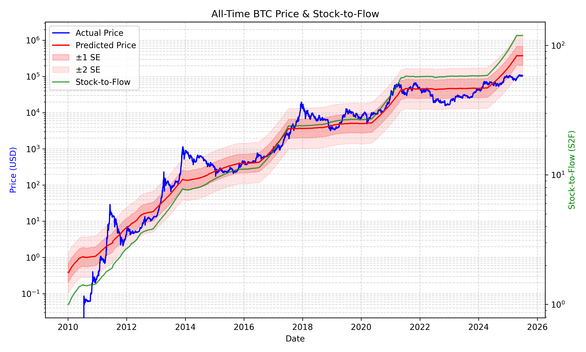
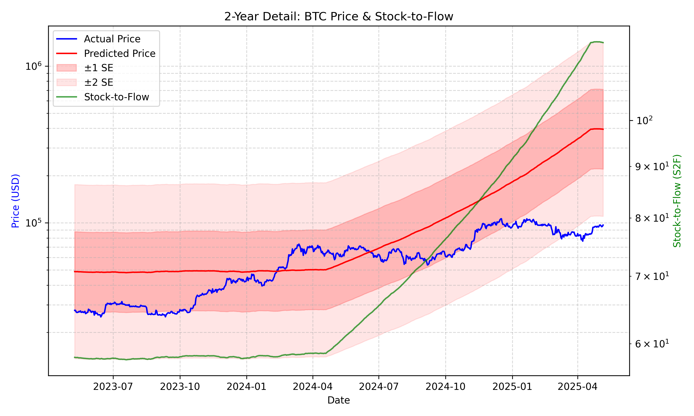
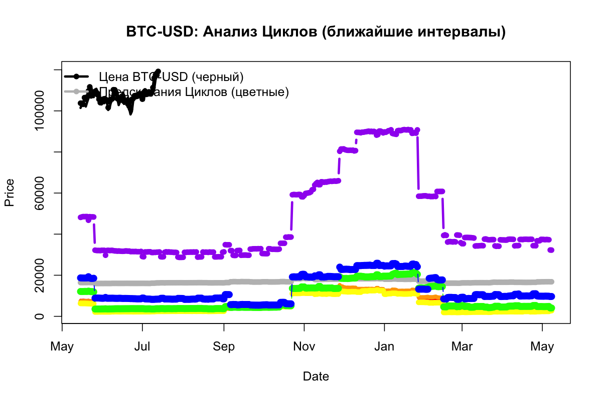
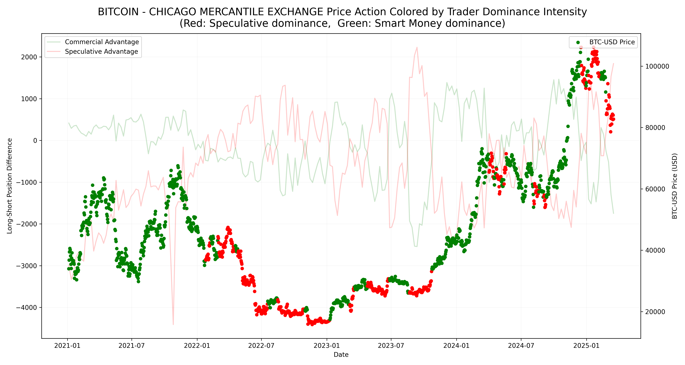
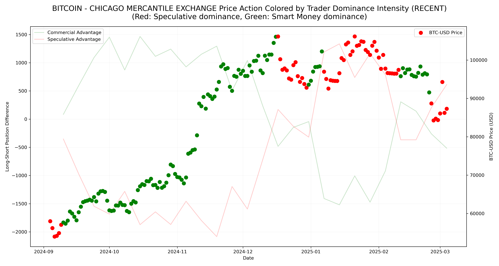

Методология:
Модель Stock-to-Flow

Эта модель строится на сравнении общего количества биткоинов в обращении (stock) с количеством новых монет, добываемых за год (flow). Отношение stock к flow даёт показатель «stock-to-flow». Чем выше это отношение, тем «реже» появляется новая монета относительно уже имеющегося запаса, что, согласно модели, может указывать на более высокую цену.
Ограничения: данная модель не учитывает множество рыночных факторов (например, спрос, макроэкономическую среду, поведение крупных игроков), поэтому реальные цены могут значительно отклоняться от прогнозов.
Stock-to-flow, сегодня

Модель Stock-tо-Flow:
Последняя дата: 2025-03-17
Цена на эту дату: 84013.95
Предсказанная цена: 322839.70
Предсказанная × 1SE: 571510.44
Предсказанная ÷ 1SE: 182368.44
Предсказанная × 2SE: 1143020.88
Предсказанная ÷ 2SE: 91184.22
Модель циклического анализа

Описание: Мы представляем исходные циклы в виде синусоидоподобных сигналов с разными периодами и фазами и вычисляем их значения в каждый момент времени. Затем обучаем модель, которая выявляет связь между этими фазами и движением цены. Выявленные наиболее значимые фазы можно рассматривать как ключевые «ритмы», способные влиять на динамику исследуемой временной серии.
Ограничения: у модели может быть неидеальный тайминг — она чаще указывает на возможные периоды ключевых движений, но может быть менее точна в определении направления движения.
Модель циклического анализа, сегодня

Исторические анализы циклов
Текущий бычий тренд, по прогнозам, завершится:
- На основе предыдущих бычьих циклов (диапазон): 2025-04-21 - 2025-10-19
- Если цикл продлится (логистический рост): 2025-10-21
- Если цикл продлится (линейный рост): 2026-02-09
Ожидается, что дно этого цикла наступит:
- (за 513-548 дней назад от ближайшего халвинга — на основе предыдущих минимумов): 2026-09-23 - 2026-10-28
CFTC Анализ

CFTC (Commodity Futures Trading Commission) — независимый регулятор в США,
контролирующий рынок фьючерсов и опционов. Еженедельные отчёты (Commitments of Traders, COT)
показывают длинные и короткие позиции разных групп участников: крупные институционалы (Smart Money)
и спекулянты (розничные и мелкие трейдеры).
Доминирующая группа определяется по нетто-позициям (long минус short). Если у одной группы
нетто-позиция существенно выше, именно она задаёт общее направление рынка. Разница между
нетто-позициями (Smart Money минус спекулянты) отражает, кто оказывает большее влияние на
текущий тренд.
Актуальный COT-отчёт для BITCOIN - CHICAGO MERCANTILE EXCHANGE на 2025-03-11
Smart Money (институциональные игроки)
- Чистая позиция: -1301 контрактов
- Изменение за неделю: -785 контрактов
- ⚠️ Увеличение защитных позиций — осторожный настрой
Спекулянты (мелкие и средние игроки)
- Чистая позиция: 1529 контрактов
- Изменение за неделю: +915 контрактов
- 📈 Рост оптимизма, бычий настрой
Текущее доминирование: Спекулянты (розничные и мелкие трейдеры)

Изменение баланса сил
- Разница между Smart Money и спекулянтами: -2830 контрактов
- Изменение за неделю: -1700 контрактов
- ⚠️ Усиление позиций спекулянтов — повышенный риск коррекции
🔑 Ключевая интерпретация
Исторически, оптимальные моменты для входа в BTC наступают, когда после периода консолидации
под доминированием спекулянтов (🔴), рынок переходит под влияние Smart Money (🟢)
и цена стабилизируется. Такие фазы являются лучшими для аккумулирования длинных позиций.
Новостной и ончейн сентимент
Отчет о состоянии рынка криптовалют на 18 марта 2025 года
Анализ недавних изменений цены BTC-USD
Индекс страха и жадности: По состоянию на 17 марта 2025 года, индекс страха и жадности для криптовалютного рынка составляет 34, что указывает на состояние "Страх". Это небольшое повышение по сравнению с предыдущим днем, когда индекс составлял 32, что свидетельствует о незначительном улучшении настроений.
Текущее поведение цены: По данным на 18 марта 2025 года, текущая цена биткоина составляет $82 979,60, что отражает снижение на 1,25% по сравнению с предыдущим закрытием. Интрадневной диапазон торговли колебался между $82 453,50 и $84 741,20, что указывает на умеренную волатильность.
Недельный тренд: За последнюю неделю цена биткоина снизилась, при этом наблюдались значительные колебания, что способствует увеличению неопределенности на рынке.
Месячный тренд: Февраль 2025 года ознаменовался самым значительным месячным снижением биткоина с июня 2022 года, с падением на 17,5%, что привело к переходу в медвежью фазу рынка.
Анализ важных событий в недавнем прошлом
Рыночная волатильность: Недавний спад в цене биткоина сопровождался рекордными оттоками из ETF, основанных на биткоине, общая сумма которых составила $3,3 млрд в феврале 2025 года. Эта тенденция подчеркивает усиление давления со стороны институциональных инвесторов.
Проблемы безопасности: В конце февраля 2025 года Северная Корея была замешана в хакерской атаке на сумму $1,5 млрд на криптовалютную биржу ByBit, что стало одной из крупнейших краж в истории криптовалют. Этот инцидент вызвал обеспокоенность по поводу безопасности платформ для цифровых активов.
Анализ значимых ончейн-событий
Метрики держателей: По состоянию на 13 марта 2025 года общее количество держателей биткоина (кошельков с ненулевым балансом) достигло приблизительно 54,71 млн, что близко к историческому максимуму в 54,72 млн, установленному 19 января 2025 года. Это свидетельствует о продолжающемся интересе и участии в сети биткоина.
Движения китов: Ончейн-аналитика выявила значительные перемещения крупных держателей биткоина (китов), некоторые из которых переводили существенные суммы на биржи. Эта активность может указывать на потенциальные продажи и способствовать краткосрочной волатильности цен.
Анализ социального настроения криптовалютного рынка
Рыночные настроения: Преобладающее настроение на криптовалютном рынке характеризуется осторожностью и страхом, что отражается в текущем индексе страха и жадности. На это влияют недавние падения цен, проблемы безопасности и более широкая экономическая неопределенность.
Предстоящие события
18 марта 2025 года:
- AMA-сессия экосистемы TON: Прямая сессия "Спросите меня о чем угодно", посвященная разработкам в экосистеме TON, запланирована на 10:00 UTC.
- Заседание FOMC: Федеральная резервная система США объявит свое решение по процентной ставке в 18:00 UTC. Это событие ожидается с большим интересом, поскольку решения по денежно-кредитной политике могут значительно повлиять на финансовые рынки, включая криптовалюты.
- Отчет о потребительской уверенности в еврозоне: Публикация этого отчета предоставит информацию об уровне доверия потребителей в еврозоне, что потенциально может повлиять на динамику рынка.
Инвесторам рекомендуется внимательно следить за этими событиями, поскольку они могут вызвать волатильность и представить как риски, так и возможности на криптовалютном рынке.